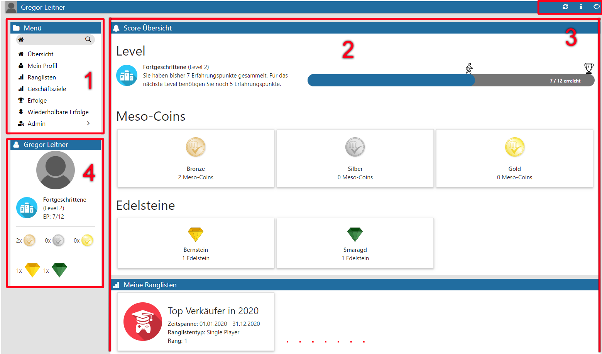

Die WinLine SMART SCORE-Benutzeroberfläche wird über
1 INFO
1 SMART
1 SCORE
aufgerufen.
Aufbau des Fensters und damit zusammenhängende Funktionen und Abläufe sind innerhalb der abgebildeten Menüpunkte wiederkehrend.

Dabei ist es wie folgt strukturiert:
1. Menü (- siehe Kapitel 5.24.3.1)
2. Hauptübersicht (- siehe Kapitel 5.24.3.2)
3. Icons der Kopfleiste (- siehe Kapitel 5.24.3.3)
4. Benutzerübersicht (- siehe Kapitel 5.24.3.4)